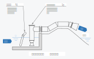

【工事概要】
仙台市太白区を流れる旧笊川は，過去に度々大きな水害を引き起こしてきました．水害による被害を軽減するために今回排水機場を建設し，その設備工事を行います．
排水機場の役割としては，旧笊川の水位がある水位超えてしまった際に，ポンプを使って旧笊川の水を広瀬川に吐き出します．
川の水を吐き出すために大きなポンプが必要となります．
今回はコラム式ポンプという 1秒間に 1.8 m3 吐き出すことの出来るポンプを 5台取り付けます．
このポンプ5台が動くと，一般的な小学校のプールの水を35秒ほどで吐き出す事が出来ます．
（長さ 25 m，幅 12.5 m，深さ 1 m 程度）
コラムとは筒のことで直径 90 cm の筒の中にポンプとそれを動かすモーターを
一緒に入れた水中ポンプです．
川からの水にはゴミなどもあります．特に大雨の時は折れてしまった木の枝などの
大きなゴミも流れてきます．それらのゴミを取り除くために除塵機というゴミを
取り除く装置も同じように 5台取り付けます．
大雨や洪水になりそうな時（非常時）にしか活躍しない設備ですので常に電気を
確保しておくと維持管理の費用が大変になります．そこで，発電機を取り付けて
その電気でポンプや除塵機を動かします．こうすることで運転の費用を抑える
工夫をしています．発電機の大きさは，750 kVA 3台取り付けますが，その内の
1台は予備機で，運転している発電機が故障があった際でもすぐ切り替えられる
ように準備しているものです．750 kVA という大きさは，一般家庭 140 世帯
余りです．2台動きますので 280 世帯ほどです．
$$\Big( \frac{750 \, \mathrm{kVA} \times 1000}{\sqrt{3} \times 30 \mathrm{A} \times 100 \mathrm{V}} \fallingdotseq 144\Big)$$
場所は，仙台市太白区袋原北河原地内です．下記に地理院地図を利用し位置を示します．
地図の左上の「＋」をクリックは，タップすることで拡大，「－」で縮小できます．
マウスでの操作であればホイールでの拡大・縮小ができます．スマートフォンや
タブレットの画面を直接操作する機器はピンチアウチ・ピンチインでの拡大・縮小が
可能です．また右上のアイコンから地理院地図の淡色地図とシームレス写真の選択が
できます．地図を閲覧した最初の時点では真ん中に「旧笊川排水機場」の位置を示す
青色のマーカーが表示されています．
（地図ではマーカーの左側に笊川と記載されていますがこれが「旧笊川」です．）
